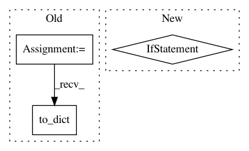

a29e0ce05cade3d3f842e570dee4204f12bd28c2,osmnx/utils_graph.py,,add_edge_lengths,#,146
Before Change
raise KeyError(f"Edge(s) missing nodes {missing_str} possibly due to clipping issue")
df_coords = pd.DataFrame(coords, columns=["u", "v", "k", "u_y", "u_x", "v_y", "v_x"])
df_coords[["u", "v", "k"]] = df_coords[["u", "v", "k"]].astype(np.int64)
df_coords = df_coords.set_index(["u", "v", "k"])
// then calculate the great circle distance with the vectorized function
gc_distances = distance.great_circle_vec(
lat1=df_coords["u_y"], lng1=df_coords["u_x"], lat2=df_coords["v_y"], lng2=df_coords["v_x"]
)
// fill nulls with zeros and round
gc_distances = gc_distances.fillna(value=0).round(precision)
nx.set_edge_attributes(G, name="length", values=gc_distances.to_dict())
utils.log("Added edge lengths to graph")
return G
After Change
try:
coords = (
(u, v, k, G.nodes[u]["y"], G.nodes[u]["x"], G.nodes[v]["y"], G.nodes[v]["x"])
for u, v, k in G.edges
)
except KeyError: // pragma: no cover
missing_nodes = {
In pattern: SUPERPATTERN
Frequency: 4
Non-data size: 3
Instances
Project Name: gboeing/osmnx
Commit Name: a29e0ce05cade3d3f842e570dee4204f12bd28c2
Time: 2020-12-02
Author: boeing@usc.edu
File Name: osmnx/utils_graph.py
Class Name:
Method Name: add_edge_lengths
Project Name: neuropsychology/NeuroKit.py
Commit Name: e3d8cb47bdcf01e991739905a5d6391aafd693a6
Time: 2017-05-26
Author: dom.mak19@gmail.com
File Name: neurokit/bio/bio_ecg.py
Class Name:
Method Name: ecg_process
Project Name: scikit-learn-contrib/categorical-encoding
Commit Name: 429ddb8fb8cc6d1492c9d459cd2120b75352f125
Time: 2018-10-23
Author: jkleint
File Name: category_encoders/leave_one_out.py
Class Name: LeaveOneOutEncoder
Method Name: fit_leave_one_out
Project Name: gboeing/osmnx
Commit Name: 9dcfc9d8e8af9a3c39f02fa340f97295c46d6d6e
Time: 2020-12-02
Author: boeing@usc.edu
File Name: osmnx/utils_graph.py
Class Name:
Method Name: add_edge_lengths